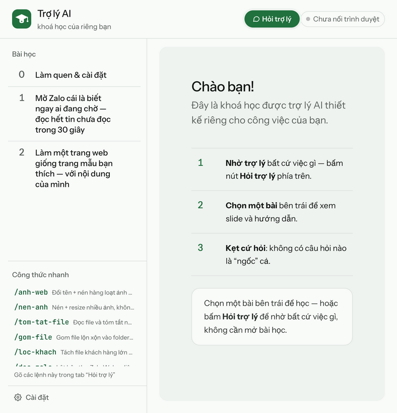

Trợ lý tiếng Việt trong máy bạn
Học dùng AI và nhờ nó làm việc, ngay trong máy mình.
Chạy nó cần gì
Một file, một trình duyệt, một não.
- Máy tính
- macOS tải được hôm nay. Bản Windows đang xây.
- Trình duyệt
- Chrome hoặc Edge, cài extension Trợ Lý AI để trợ lý lái web
- Não AI
- Chọn một trong sáu: Devin, Gemini CLI, Codex, Claude Code, OpenCode, Goose. Onboarding dẫn cài từng cái.
- Kết nối
- Mã kết nối riêng của máy, sinh một lần. Trang lạ không chạm được.
Nó làm việc thế này
Quay thật từ bài học thật, không dàn dựng.

Trước và sau một câu nhờ
| Trước | Sau |
|---|---|
| Sáng mở Zalo, chấm đỏ khắp nơi, không biết ai gấp | Một bản tóm tắt: ai đang chờ, chuyện gì, ai trả lời trước |
| Thèm trang giống trang đối thủ mà không biết bắt đầu | Trang mới cùng khuôn, chữ và giá của bạn hết |
| Năm trăm ảnh nằm rải trong Downloads | Gọn vào folder, tên chuẩn web, file gốc còn nguyên |
Không gì rời máy bạn khi bạn không cho phép.
Mỗi kết nối khoá bằng mã riêng trên máy. Folder nào trợ lý được mở do bạn cấp từng cái; nó luôn hỏi trước khi gửi tin hay xoá gì.
Tải về. Mở. Học.
Chạy một file. Màn hình chào tiếng Việt dẫn từng bước: chọn não, kết nối trình duyệt, phỏng vấn khoá học.

troly.